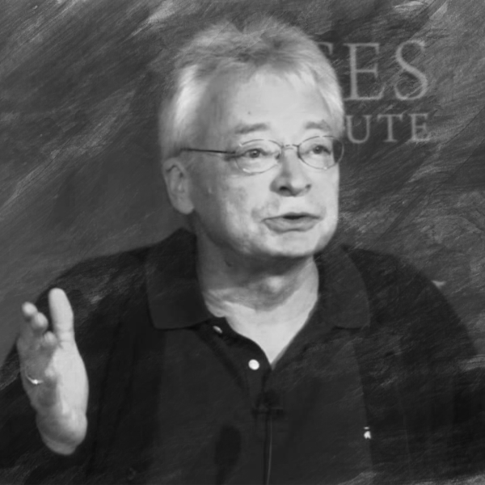

Hans-Hermann Hoppe
Hans-Hermann Hoppe (Peine, 2 de setembro de 1949) é um filósofo e economista alemão-americano da escola austríaca. É professor emérito de economia na Universidade de Nevada, Las Vegas, tendo se aposentado em 2008. Obteve seu PhD na Universidade de Frankfurt Johann Wolfgang Goethe, na Alemanha. É membro sênior do Ludwig von Mises Institute e co-editor do periódico Review of Austrian Economics.
Suas contribuições abarcam desde a ética - na qual fundamenta o direito natural a partir da teoria discursiva habermasiana - à economia - debatendo o conceito de bem público, passando pela política libertária e a apologia do direito privado como o único ético e eficaz. É autor, entre outros trabalhos, de Uma Teoria sobre Socialismo e Capitalismo e The Economics and Ethics of Private Property, onde defende um sistema bancário livre.
Lecionou em várias universidades alemãs, assim como no Centro Bolonha de Estudos Internacionais Avançados, em Bolonha, Itália. Em 1986 mudou-se da Alemanha para os Estados Unidos, onde foi aluno de Murray Rothbard, com quem colaborou de forma assídua até a morte do mestre, em janeiro de 1995. De acordo com uma postagem do seu blog, Hoppe participou de uma série de conferências organizadas por Lew Rockwell, Burt Blumert e Murray Rothbard, visando criar o que veio ser conhecido como paleo-libertarianismo. Foi autor de vários livros e artigos amplamente discutidos. Desenvolveu uma ética da argumentação em defesa de direitos libertários, parcialmente baseada nas teorias da ética do discurso dos filósofos alemães Jürgen Habermas e Karl-Otto Apel.